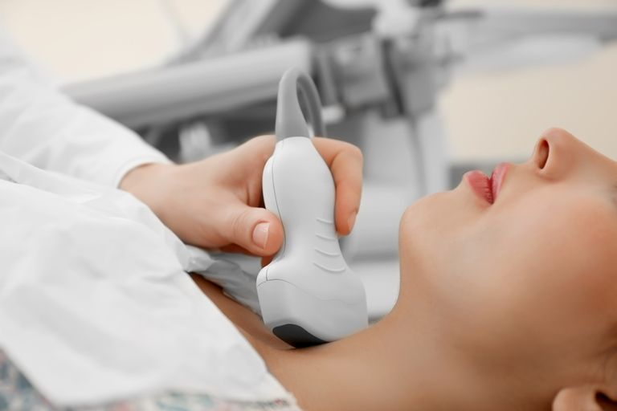

🩺 Регулярно відвідуйте ендокринолога
Профілактичний візит до лікаря та базові аналізи (хоча б раз на рік) необхідні навіть тоді, коли нічого не болить. Багато гормональних порушень тривалий час розвиваються приховано.
Ендокринні хвороби (такі як цукровий діабет, гіпотиреоз чи порушення роботи надниркових залоз) значно простіше попередити, ніж лікувати. Здоровий спосіб життя — це найкраща інвестиція у ваш гормональний баланс.
Зробіть акцент на цільних продуктах. Організму потрібні свіжі овочі, фрукти, якісні білки та корисні жири, які є основою для синтезу багатьох гормонів.
Щитоподібна залоза не працює без йоду. Оскільки жителі України недоотримують цей мікроелемент, додавайте до раціону морепродукти, морську капусту та йодовану сіль.
Достатня кількість води покращує кровообіг та обмін речовин. Бажано пити воду за 30 хвилин до їжі, щоб не порушувати процес травлення.
Хронічний стрес змушує надниркові залози викидати кортизол та адреналін на виснаження. Навчіться відпочивати та використовуйте безпечні трав'яні заспокійливі.
Регулярні тренування нормалізують чутливість клітин до інсуліну, стимулюють метаболізм і допомагають утримувати вагу, запобігаючи діабету.
Здоровий імунітет захищає органи від аутоімунних атак. Він підтримується здоровим сном, загартовуванням та корисними жирами (Омега-3).

Профілактичний візит до лікаря та базові аналізи (хоча б раз на рік) необхідні навіть тоді, коли нічого не болить. Багато гормональних порушень тривалий час розвиваються приховано.
Не зволікайте з візитом до ендокринолога, якщо ви помітили у себе: постійну слабкість і втому, різкі коливання ваги (без зміни харчування), набряки, випадіння волосся, постійне відчуття жару або мерзлякуватості, часте сечовипускання, дискомфорт у ділянці шиї або тривалу дратівливість та депресивний стан.